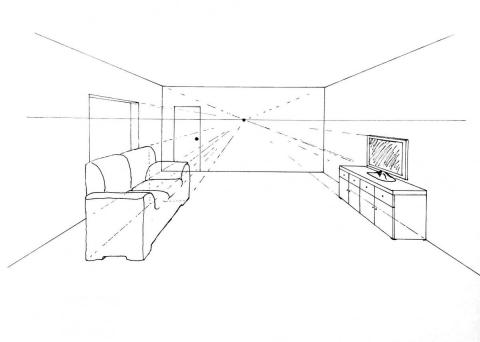

Tactic: Disturbance
Technique: Sensor Tampering
When a robot uses sensors like camera's, microphones, LIDAR or SONAR for mapping it's environment and movement,
one can use specific techniques to tamper with them. For example, one can shine a bright light so the robot
cannot 'see' or generate a hard or a lot of sound noise so it cannot 'hear' other sounds. Technologies that are
used by for example submarines, might also be applicable to robots that use SONAR.
Another possible way of tampering with a robots camera sensor, could be by fooling the method with which it
precives depth. For example, it might use perspective to detect walls, floors and other objects. Placing a
picture as shown below in front of the robot, might fool it into thinking there is a room in front of it.

Technique in practice
Mitigations
Protecting against sensor tampering can be done by not relying on only one sensor technology. By adding multiple
sensors to a robot like camera's, LIDAR and SONAR for mapping the environment, the robot has fallback options
when for example the camera's are tampered with. One should also be aware of which specific sensor types are
vulnerable for tampering.
Detections
detections
Ethical Considerations
Documented incidents with autonomous robots
No incidents known at the time of writing.
Documented incidents in other domains